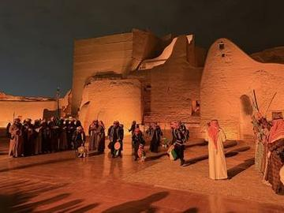
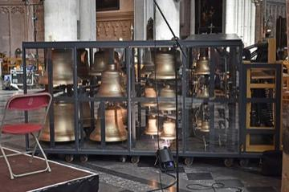
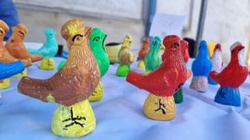
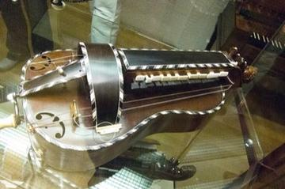

Classical Worlds 31

Adungu
Uganda · Musical instruments
Dizi
China · Musical instruments
Fujara
Slovakia · Musical instruments
Fula Riti One-String Fiddle
Guinea · Musical instruments
Gayageum
South Korea · Musical instruments
Geomungo
South Korea · Musical instruments
Imzad Fiddle
Niger +2 · Musical instruments
Joropo llanero band
Venezuela +1 · Musical instruments
Kanklės
Lithuania · Musical instruments
Kantele
Finland · Musical instruments
Khloy bamboo duct flute
Cambodia · Musical instruments
Khomus
Russia · Musical instruments
Krar lyre
Ethiopia +1 · Musical instruments
Kulintang
Philippines +3 · Musical instruments
Kurai
Russia · Musical instruments
Langeleik
Norway · Musical instruments
Langspil
Iceland · Musical instruments
Morin khuur
Mongolia · Musical instruments
Mountain dulcimer
United States · Musical instruments
Murchunga
Nepal · Musical instruments
Mvet
Gabon +2 · Musical instruments
Nyatiti Luo lyre
Kenya · Musical instruments
Nyckelharpa
Sweden · Musical instruments
Paraguayan Harp
Paraguay · Musical instruments
Portuguese Guitar
Portugal · Musical instruments
Qanun
Turkey +2 · Musical instruments
Sasando
Indonesia · Musical instruments
Saung gauk
Myanmar · Musical instruments
Shakuhachi
Japan · Musical instruments
Valiha tube zither
Madagascar · Musical instruments
Zande kundi arched harp
South Sudan · Musical instruments
Crossroads and Golden Ages 19

Afghan Rubab Strings
Afghanistan · Musical instruments
Buzuq Long-Neck Lute
Lebanon +2 · Musical instruments
Charango
Bolivia +1 · Musical instruments
Chonguri
Georgia · Musical instruments
Çiftelia
Albania · Musical instruments
Dombra
Kazakhstan · Musical instruments
Dranyen
China · Musical instruments
Erhu Two-String Fiddle
China · Musical instruments
Highland Bagpipe Chanter and Drone
United Kingdom · Musical instruments
Horn of Africa camel caravan
Djibouti · Musical instruments
Komuz
Kyrgyzstan · Musical instruments
Latvian Bagpipe and Folk Pipes
Latvia · Musical instruments
Mbira
Zimbabwe · Musical instruments
Mezoued Bagpipe and Tabl Drum
Tunisia · Musical instruments
Rabab plucked lute
India +1 · Musical instruments
Saz / Bağlama
Turkey · Musical instruments
Tar and mugham modes
Azerbaijan · Musical instruments
Tsugaru Shamisen
Japan · Musical instruments
Veena
India · Musical instruments
Age of Contact and Craft 3

Bandoneon and tango rhythm
Argentina +1 · Musical instruments
Bodhran Frame Drum
Ireland · Musical instruments
Steelpan
Trinidad and Tobago · Musical instruments
Modern Heritage 1

Jamaican Sound System Selector
Jamaica · Musical instruments
Living Traditions 40

Amadinda and embaire
Uganda · Musical instruments
Angklung bamboo chime ensemble
Indonesia · Musical instruments
Ardah Drum-and-Line Rhythm
Saudi Arabia · Musical instruments
Babatone
Malawi · Musical instruments
Batuque Cloth-Drum Circle
Cape Verde · Musical instruments
Bianzhong
China · Musical instruments
Bouzouki Strum
Greece · Musical instruments
Burundian drum ensemble
Burundi · Musical instruments
Calabash Water Drum
Niger +1 · Musical instruments
Carillon
Belgium +1 · Musical instruments
Cimbalom
Hungary · Musical instruments
Clay Bird Whistle Painting
Luxembourg · Musical instruments
Dan bau
Vietnam · Musical instruments
Dhol drum rhythm
India · Musical instruments
Fijiri Pearl-Diver Sea Songs
Kuwait +1 · Musical instruments
Gadulka
Bulgaria · Musical instruments
Goje One-String Fiddle
Nigeria +1 · Musical instruments
Gusle Bow and Verse
Serbia · Musical instruments
Hardanger Fiddle Halling
Norway · Musical instruments
Hurdy-gurdy
France · Musical instruments
Khene
Laos · Musical instruments
Launeddas Triple Pipe
Italy · Musical instruments
Lur pitch-and-breath game
Denmark · Musical instruments
Lusheng
Worldwide · Musical instruments
Marimba
Worldwide · Musical instruments
Masenqo and the azmari
Ethiopia · Musical instrumentsMento band
Jamaica · Musical instruments
Mijwiz Double Clarinet
Lebanon +3 · Musical instruments
Puerto Rican Cuatro
Worldwide · Musical instruments
Ranat ek
Thailand · Musical instruments
Rubboard zydeco rhythm
United States · Musical instruments
Santoor
India · Musical instruments
Santur Hammer Strings
Iran +3 · Musical instruments
Skrabalai
Lithuania · Musical instruments
Talking drum
Nigeria · Musical instruments
Tombak goblet drum rhythms
Iran · Musical instruments
Trembita
Ukraine · Musical instruments
Tres cubano
Cuba · Musical instruments
Txalaparta Duet
Spain · Musical instrumentsWazza gourd trumpet
Sudan · Musical instruments